import control as ctrl
import numpy as np
import matplotlib.pyplot as plt
from matplotlib.ticker import ScalarFormatter
%matplotlib inline
Figuras de 1 polo en cero
G = ctrl.tf(1, [1, 0])
ctrl.pzmap(G)
fig = plt.gcf()
fig.savefig('Figure_1.png')
G = ctrl.tf(1, [1, 0])
ctrl.bode(G, dB=True)
fig = plt.gcf()
fig.savefig('Figure_2.png')
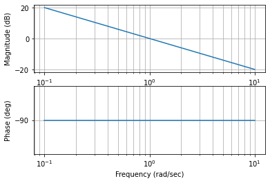
Polos multiples en el origen
G = ctrl.tf(1, [1, 0, 0])
ctrl.pzmap(G)
fig = plt.gcf()
fig.savefig('Figure_3.png')
plt.figure()
ctrl.bode(G, dB=True)
fig = plt.gcf()
fig.savefig('Figure_4.png')
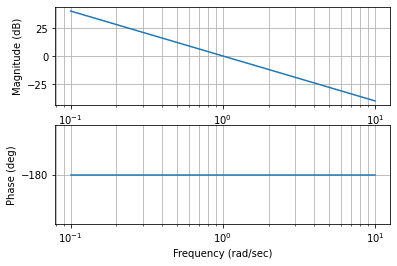
Polo real negativo
G = ctrl.tf(1, [1, 1])
ctrl.pzmap(G)
fig = plt.gcf()
fig.savefig('Figure_5.png')
fig = plt.figure()
ctrl.bode(G)
fig.savefig('Figure_6.png')
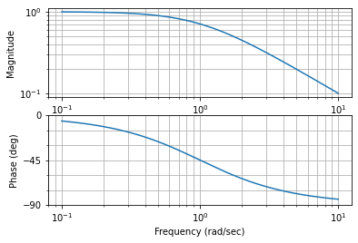
Polos complejos conjugados
xi = 0.5
wn = 1
G = ctrl.tf(wn**2, [1, 2*xi*wn, wn**2])
ctrl.pzmap(G)
fig = plt.gcf()
fig.savefig('Figure_7.png')
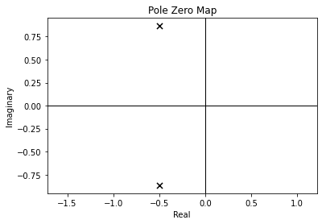
fig = plt.figure()
xi = [0.9, 0.7, 0.5, 0.3, 0.1, 0.01]
wn = 1
for i in range(np.size(xi)):
G = ctrl.tf(wn**2, [1, 2*xi[i]*wn, wn**2])
ctrl.bode(G, dB=True, omega_num=2001)
fig.savefig('Figure_8.png')
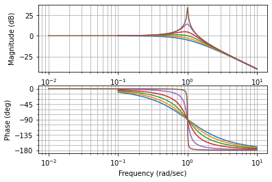
Cero simple en el origen
G = ctrl.tf([1, 0], 1)
ctrl.pzmap(G)
fig = plt.gcf()
fig.savefig('Figure_9.png')
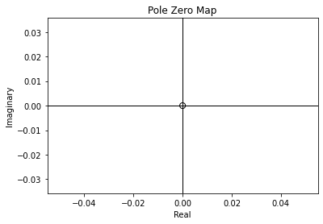
fig = plt.figure()
ctrl.bode(G, dB=True)
fig.savefig('Figure_10.png')
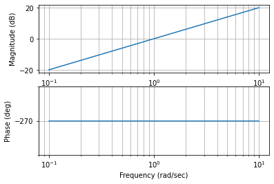
Cero multiple en el origen
G = ctrl.tf([1, 0, 0], 1)
ctrl.pzmap(G)
fig = plt.gcf()
fig.savefig('Figure_11.png')
fig = plt.figure()
ctrl.bode(G, dB=True)
fig.savefig('Figure_12.png')
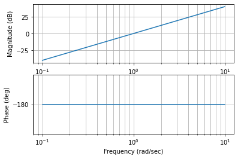
Cero negativo real simple
G = ctrl.tf([1, 1], 1)
ctrl.pzmap(G)
fig = plt.gcf()
fig.savefig('Figure_13.png')
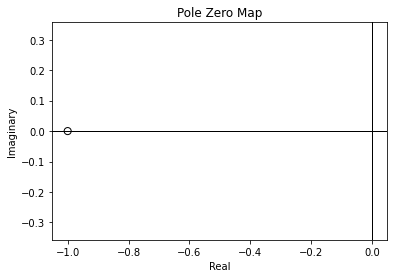
fig = plt.figure()
ctrl.bode(G, dB=True)
fig.savefig('Figure_14.png')
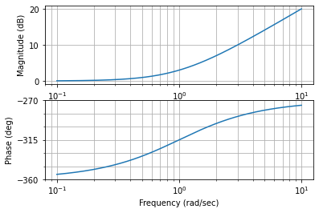
Cero real complejo conjugado
xi = [0.9, 0.7, 0.5, 0.3, 0.1, 0.01]
wn = 1
fig = plt.figure()
for i in range(np.size(xi)):
G = ctrl.tf([1, 2*xi[i]*wn, wn**2], wn**2)
ctrl.bode(G, dB=True, omega_num=2001)
fig.savefig('Figure_15.png')
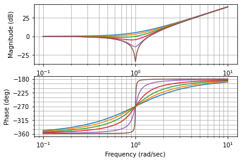
Cero real simple de no mínima fase
G = ctrl.tf([1, -1], 1)
ctrl.pzmap(G)
fig = plt.gcf()
fig.savefig('Figure_16.png')
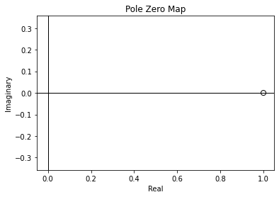
fig = plt.figure()
ctrl.bode(G, dB=True)
fig.savefig('Figure_17.png')
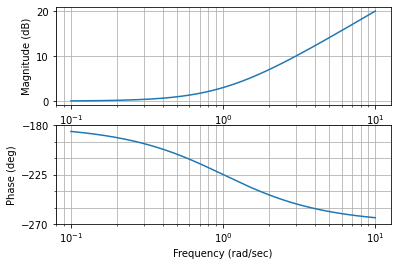
G = 200*ctrl.tf([1, 0.5], [1, 60, 500, 0])
asin1_x = [0.01, 0.1, 1, 10, 100, 1000]
asin1_y = [-14, -14, -14, -14, -34, -54]
asintota polo en -50
asin2_x = [0.01, 0.1, 50, 500, 5000]
asin2_y = [-14, -14, -14, -34, -54]
sintota polo en 0
asin3_x = [0.01, 0.1, 1, 10, 100, 1000]
asin3_y = [26, 6, -14, -34, -54, -74]
asintota cero en 0.5
asin4_x = [0.01, 0.1, 0.5, 5, 50, 500]
asin4_y = [-14, -14, -14, 6, 26, 46]
Asintota final
asin_final_x = [0.01, 0.1, 0.5, 1, 10, 50, 500, 5000]
asin_final_y = [26, 6, -8, -8, -8, -22, -62, -102]
mag, ph, w = ctrl.bode(G, omega_limits=(0.01, 1000), omega_num=2001,
dB=True, plot=False)
fig, ax = plt.subplots(figsize=(12, 6))
ax.semilogx(asin1_x, asin1_y, '--', alpha=0.4, label='Asintotas polo -10')
ax.semilogx(asin2_x, asin2_y, '--', alpha=0.4, label='Asintotas polo -50')
ax.semilogx(asin3_x, asin3_y, '--', alpha=0.4, label='Asintota polo 0')
ax.semilogx(asin4_x, asin4_y, '--', alpha=0.4, label='Asintotas cero -0.5')
ax.set_xlim([0.01, 800])
with plt.xkcd():
ax.semilogx(asin_final_x, asin_final_y, 'b--', alpha=0.8,
label='Composición asintotas')
ax.spines['right'].set_color('none')
ax.spines['top'].set_color('none')
ax.xaxis.set_ticks_position('bottom')
ax.spines['bottom'].set_position(('data', 0))
ax.yaxis.set_ticks_position('left')
ax.spines['left'].set_position(('data', 0.01))
ax.semilogx(w, 20*np.log10(mag), 'k-.', alpha=0.45, label='Bode final a mano')
ax.legend(loc='lower left')
ax.plot([0.011, 10, 50], [0, 0, 0], lw=0, marker='x', markersize=11, markerfacecolor='white', markeredgewidth=2, markeredgecolor="red")
ax.plot([0.5], [0], lw=0, marker='o', markersize=11, markerfacecolor='white', markeredgewidth=2, markeredgecolor="red")
fig.savefig('asintotico_mag.png')
findfont: Font family ['xkcd', 'xkcd Script', 'Humor Sans', 'Comic Neue', 'Comic Sans MS'] not found. Falling back to DejaVu Sans.
findfont: Font family ['xkcd', 'xkcd Script', 'Humor Sans', 'Comic Neue', 'Comic Sans MS'] not found. Falling back to DejaVu Sans.
ang_x = [0.01, 0.1, 0.5, 0.5, 1, 10, 10, 50, 50, 500, 5000]
ang_y = [-90, -90, -90, 0, 0, 0, -90, -90, -180, -180, -180]
fig, ax = plt.subplots(figsize=(12, 6))
ax.semilogx(ang_x, ang_y, 'k-', alpha=0.7)
with plt.xkcd():
ax.semilogx(w, ph*180/np.pi, 'r', label="fase a mano")
ax.spines['right'].set_color('none')
ax.spines['top'].set_color('none')
ax.xaxis.set_ticks_position('bottom')
ax.spines['bottom'].set_position(('data', 0))
ax.yaxis.set_ticks_position('left')
ax.spines['left'].set_position(('data', 0.01))
ax.set_xlim([0.01, 800])
ax.set_yticks([-180, -135, -90, -45, 0])
ax.plot([0.011, 10, 50], [0, 0, 0], lw=0, marker='x', markersize=11, markerfacecolor='white', markeredgewidth=2, markeredgecolor="red")
ax.plot([0.5], [0], lw=0, marker='o', markersize=11, markerfacecolor='white', markeredgewidth=2, markeredgecolor="red")
fig.savefig('asintotico_fase.png')
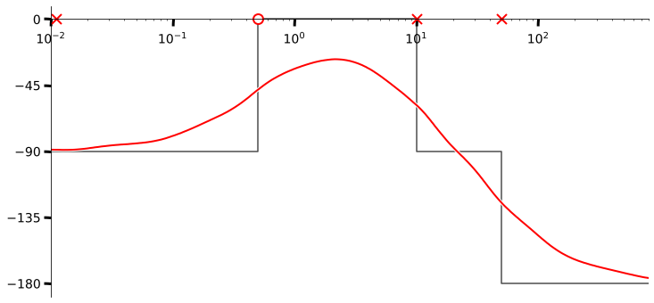